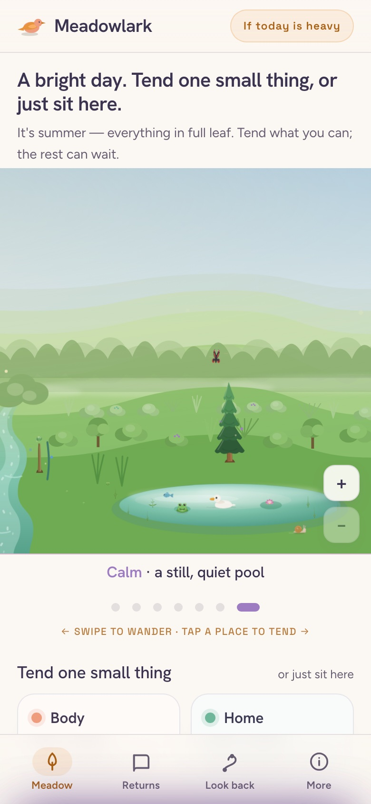
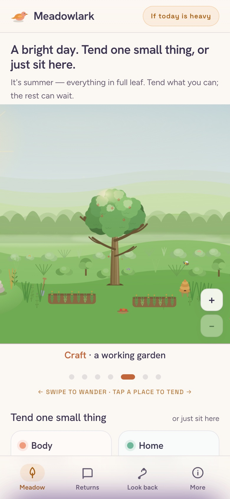
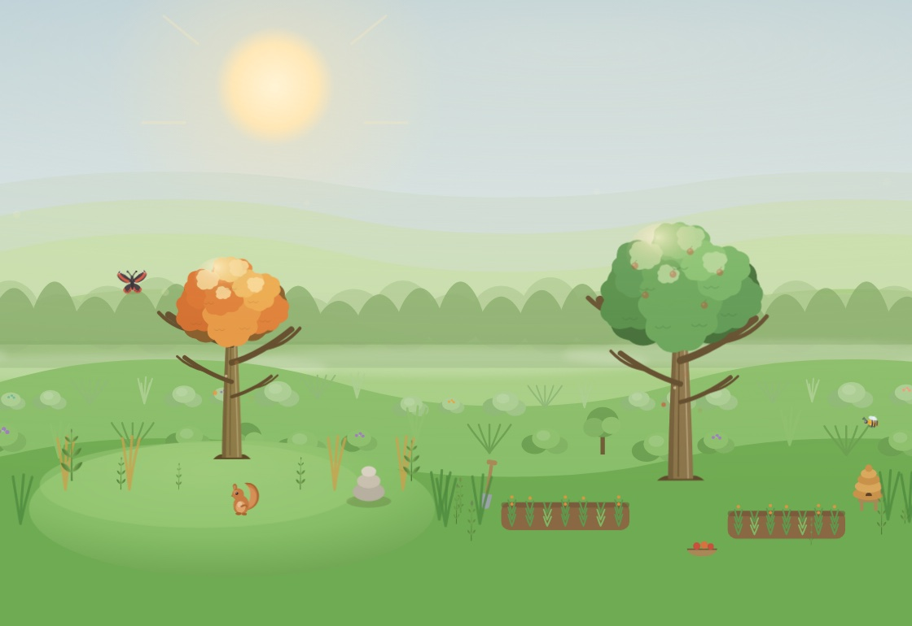
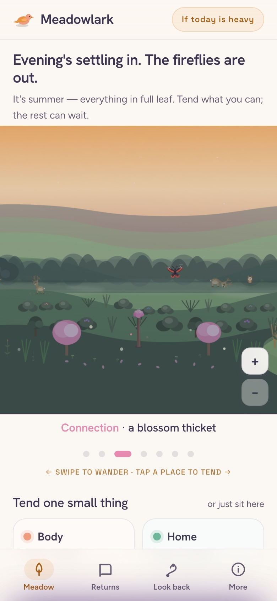
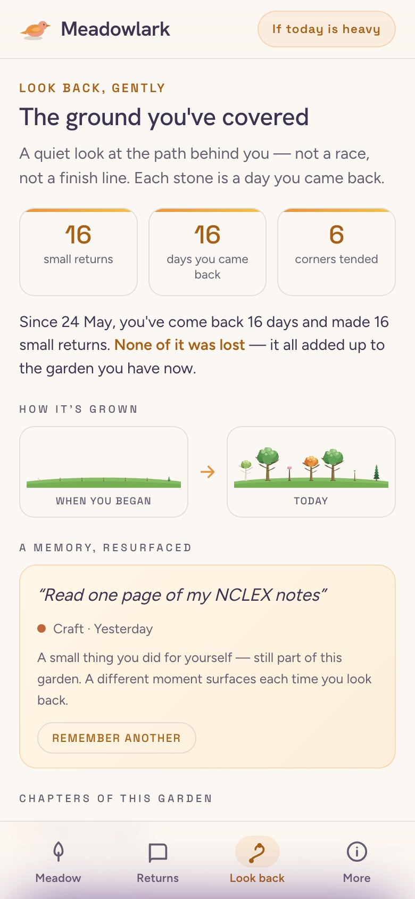

Maybe you burned out, took a break, changed lanes, or walked out of school and froze. However you got here, the craft you care about didn't disappear — it went quiet. Meadowlark helps you come back to it one small return at a time. No streaks to keep, no shame if you've been away, nothing to prove.


Not healthcare-only, not tech-only. Pick a craft, then tap a star to stand wherever you actually are. It's a sky to find yourself in, not a race — every stage counts as a life, not a waiting room.

No setup marathon, no goal wizard, no long to-do list. A gentle loop you pick up on the days you have it in you.
Developer, nurse, electrician, teacher, chef — hundreds of crafts, each with real stages and honest US numbers. Then say where you honestly stand: curious, learning, near exams, first years, or seasoned.
Each week your craft offers one small thread — a few concrete steps you could do on a tired day. Do one and the garden stirs. “Not now” is always there, and it costs you nothing.
Coming back isn't only about work. Body, home, connection, meaning, future, calm — six more corners of the garden, and none of them are ever failing.
Burnout, a break, a change of direction, or straight out of school — across whatever craft is yours. The way back is the same: small, and yours.
When the thing you loved started to hurt, stepping away was wise. Coming back doesn't have to mean going full-speed again. One gentle thread a week, and the rest can wait.
Parenting, illness, caregiving, a year that took everything — time away didn't wipe your skill. It's still there under the dust. We help you brush it off, slowly.
A new craft, or the first real steps after class ends and the world goes quiet. No one's timing you. Start where you actually are and let the ground build under you.
Every screen below is the actual app — open it right now, free, in your browser.
Every small return waters the Craft corner of your meadow — an apple tree, garden beds, a beehive that slowly come alive. It can grow quiet while you rest, but it never dies because you were away.

The meadow keeps your whole life, not just your work — and it lives through real days and seasons. Wander over to Connection at dusk, watch the deer come out, tend one small thing. Or just sit here. That counts too.

A quiet page keeps the ground you've covered — the days you came back, how the meadow has grown since, one old note resurfacing like a pressed flower. Not a report card. Proof, kept gently, that you kept returning.
Miss a week, a month, a season — the garden you've grown is still standing, still yours, waiting. No numbers ticking down, no “you're falling behind”, and never a word about the days you were away.
Meadowlark is a calm companion — not therapy, not medical care, and not a substitute for real help. If it's more than heavy right now, please reach for a human first.
Open Meadowlark, pick your craft, and take one small return. No account, no sign-up, nothing to install.
Open the garden →